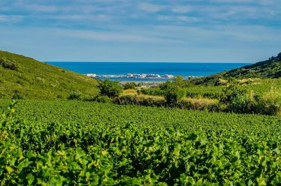

Muscat de
Frontignan


⟹ Vins & Appellations ⟸
La vigne est présente depuis l'Antiquité sur le littoral languedocien, et Frontignan occupe une position privilégiée entre la Méditerranée, les étangs et le massif de la Gardiole. Le muscat à petits grains y a trouvé un terroir particulièrement favorable. Au fil du Moyen Âge, le nom de Frontignan s'attache progressivement à un vin doux aromatique dont la réputation dépasse le cadre local.

Cette réputation ancienne entraîne très tôt une volonté de protéger le nom et l'origine. Bien avant la création moderne des appellations d'origine, les producteurs et autorités locales cherchent à distinguer le véritable vin de Frontignan des imitations. Cette défense précoce du lien entre un produit et son territoire annonce, plusieurs siècles à l'avance, les principes qui seront ceux des appellations contrôlées.
Sous l'Ancien Régime, le muscat de Frontignan devient un vin recherché. Il circule par les routes commerciales du Languedoc et par les ports méditerranéens, gagnant les tables aisées en France et à l'étranger. Sa renommée est également littéraire : Voltaire, amateur déclaré du vin de Frontignan, écrit en décembre 1774 pour demander qu'on lui en expédie, témoignage célèbre du prestige dont jouissait alors ce muscat.
Le XIXe siècle est à la fois une période d'expansion viticole et de crises. Comme les autres vignobles du Midi, Frontignan doit affronter l'oïdium, puis le phylloxéra qui ravage les vignes européennes. La reconstitution du vignoble sur porte-greffes américains permet de préserver le muscat à petits grains et de maintenir une spécialisation ancienne malgré les profondes mutations de la viticulture languedocienne.
La spécificité du vin tient à la technique du mutage : l'ajout d'alcool vinique au moût en fermentation bloque l'action des levures et conserve une partie des sucres naturels du raisin. Le Muscat de Frontignan appartient ainsi à la famille historique des vins doux naturels. Les pratiques de récolte et de concentration du raisin ont également varié au fil du temps, certaines parcelles ayant connu le passerillage pour accentuer richesse et maturité.
Au début du XXe siècle, dans un contexte de lutte contre les fraudes et les usurpations de noms, la protection juridique des vins doux naturels se précise. Le jugement du tribunal de Montpellier du 4 juillet 1935 participe à la délimitation de l'aire de production. Le décret du 31 mai 1936 reconnaît officiellement le Muscat de Frontignan parmi les premières appellations d'origine contrôlée françaises, au moment même où se met en place le système national des AOC.
L'appellation s'appuie sur Frontignan et Vic-la-Gardiole, dans un paysage où la Gardiole protège en partie les vignes des vents du nord tandis que les influences marines tempèrent les chaleurs estivales. Cette géographie explique la permanence d'un vignoble très spécialisé, dominé par le muscat blanc à petits grains, cépage réputé pour l'intensité de ses arômes floraux, fruités et épicés.
Au XXe siècle, la cave coopérative et les domaines particuliers assurent la continuité de la production. Malgré l'urbanisation du littoral et la pression foncière, le vignoble conserve une forte valeur patrimoniale. Les fêtes du muscat, les confréries, la mémoire des vendanges et la présence du vin dans l'identité de Frontignan entretiennent un lien étroit entre la ville et son vignoble.
Aujourd'hui, le Muscat de Frontignan est l'un des témoins les plus anciens de la notion française de terroir protégé. Son histoire associe viticulture méditerranéenne, commerce des vins doux, célébrité littéraire, résistance aux crises viticoles et construction juridique des appellations. La reconnaissance de 1936 n'est donc pas un point de départ, mais l'aboutissement institutionnel d'une réputation forgée pendant plusieurs siècles.
Le muscat de Frontignan se distingue par des vins traditionnels élevés en barrique, propices à une oxydation ménagée qui leur donne des nuances dorées et des arômes d'abricot et de raisin sec légèrement musqués, aux côtés de versions plus modernes, préservées de l'oxygène, plus fraîches et tournées vers les agrumes et les fruits exotiques.
Robe dorée, texture grasse et longue en bouche, ce vin doux naturel se prête aussi bien à une dégustation jeune, sur le fruit, qu'à un léger vieillissement de deux à trois ans qui accentue ses notes de miel.
Un vin d'exception né de la rencontre entre un cépage précoce et un terroir façonné par la mer et le vent.
— Tradition viticole de FrontignanÀ une dizaine de kilomètres au nord-est de Sète, l'appellation tient tout entière sur deux communes littorales, entre étangs et massif calcaire.
Frontignan cœur historique de l'appellation, où la cave coopérative rassemble l'essentiel de la production.
Vic-la-Gardiole commune voisine intégrée à l'aire d'appellation, sur le versant nord-ouest du massif de la Gardiole.
Étang de Thau à proximité immédiate, un cadre naturel qui explique le microclimat si particulier du vignoble.